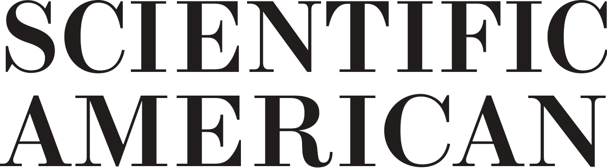

Dr. Gang He
News&Events
News
Events
Publications
Selected Papers
Commentary
Testimony
List of Publication
Teaching
Media
Posts
Now
Contact
CV
Categories
All
(18)
E&E News
(7)
Forbes
(1)
Inside Climate News
(1)
National Geographic
(1)
Nature
(3)
Nikkei Asia
(1)
Scientific American
(3)
The Guardian
(1)
The New York Times
(1)
The Seattle Times
(1)
WSHU Public Radio
(1)
Media
In the news
Order By
Default
Title
Date - Oldest
Date - Newest
Author
China–US climate collaboration concerns as Xie and Kerry step down
Nature
Gang’s quote on the importance to continue the research exchange and colloboration ‘If the river freezes over, water will still flow underneath.’
Mar 12, 2024
Smriti Mallapaty

What the U.S.-China Agreement Means for Greenhouse Gas Emissions
Scientific American
E&E News
The two nations announced limited steps to address climate change. But even a modest agreement could have far-reaching effects.
Nov 16, 2023
Benjamin Storrow, Sara Schonhardt
How Biden’s made-in-America solar strategy may backfire
E&E News
A new
study
in
Nature
concludes that policies similar to ones the administration is considering could make solar panels 30 percent more expensive by the end of the decade.
Oct 27, 2022
David Iaconangelo
Asia’s nuclear power dilemma: Ukraine war drives energy turnarounds
Nikkei Asia
From Japan to Singapore, Russia sanctions and carbon-zero targets push states to reconsider nuclear energy.
Apr 20, 2022
Dominic Faulder
China creates vast research infrastructure to support ambitious climate goals
Nature
Carbon-neutrality institutes, and other initiatives to support a pledge to achieve net zero by 2060, are popping up like mushrooms across China.
Nov 22, 2021
Smriti Mallapaty
How China could be carbon neutral by mid-century
Nature
Nature special report examines the role of renewables, nuclear power and carbon capture in reaching this ambitious goal.
Oct 19, 2020
Smriti Mallapaty
China Says It Will Stop Releasing CO2 within 40 Years
Scientific American
E&E News
The surprise announcement vaults the country ahead of U.S. climate ambitions and could encourage developing countries to follow suit.
Sep 23, 2020
Jean Chemnick, Benjamin Storrow
Plummeting Renewable Energy, Battery Prices Mean China Could Hit 62% Clean Power And Cut Costs 11% By 2030
Forbes
New research shows plummeting clean energy prices mean China could reliably run its grids on at least 62% non-fossil electricity generation by 2030, while cutting costs 11% compared to a business-as-usual approach. Once again, it’s cheaper to save the climate than destroy it.
Aug 10, 2020
Energy Innovation
Surging coal use in China threatens global CO2 goals
E&E News
The fast decrease in the cost of solar, wind and storage, and technological innovation has fundamentally changed the economics of renewables, said Gang He, our analysis shows that such a fast decarbonization and clean power transition is both technically feasible and economicallybeneficial.
Jun 9, 2020
Benjamin Storrow
China’s Path to Clean Energy May Be Smoother than We Previously Thought
Inside Climate News
A new
paper
in the journal
Nature Communications
says the probable reality is much better than we previously thought, largely because of falling costs of wind, solar and battery storage.
Jun 4, 2020
Dan Gearino
Bill Calls For An Emissions-Free NY By 2050
WSHU Public Radio
In addition to policy, technology, there are also behavior components to that. How we incentivize people to change their behavior and their lifestyle.
Feb 18, 2019
Jay Shah
Where is the world’s greenest city?
The Guardian
In a 2015
study
published in the journal Ecological Indicators, scientists based at the Lawrence Berkeley National Laboratory in California have fine-tuned a potential method for assessing Chinese “eco-cities” using 33 key indicators.
Apr 2, 2015
Hayley Birch
Western companies gave China power projects a boost
The Seattle Times
The rejections exposed cracks at the core of how carbon credits are verified in developing economies, according to a
study
of the Chinese wind-power industry by Gang He and Richard Morse of Stanford University.
May 5, 2014
Hal Bernton
Beijing’s record smog poses health nightmare as China plans ‘green’ energy future
E&E News
I see it as a system failure exposed in a bad weather condition, said Gang He. The government has to first figure out the sources of air pollutants in order to adopt the right measures.
Mar 25, 2013
Kandy Wond
Government conflicts could slow shale gas development
E&E News
The priorities between the central and local governments are often different, said Gang He, the top concern of the central government is energy security while economic growth matters most for local governments.
May 9, 2012
Kandy Wond
Beijing Emission Cuts May Underestimate Use of Coal
Scientific American
E&E News
It should be noted that the coal industry is gradualtly being opened to market, while the electricity industry is still highly regulated. The scattered management of energy issues within the central government makes the energy administration’s mission very difficult one.
May 7, 2012
Kandy Wond
Seeking a Pacific Northwest Gateway for U.S. Coal
National Geographic
The middle kingdom’s appetite for imported coal seems insatiable, wrote researchers Richard Morse and Gang He in a 2010 working paperm refering to China. And the China Factor appears to have ushered in a new paradigm for the global coal market.
Oct 20, 2011
Stacey Schultz
Drop in CO2 in U.S. and Power Use in China – for Now
The New York Times
Researchers at Stanford University say blazing growth in the generation of electricity in China ended last year as the global recession struck.
May 21, 2009
Andrew Revkin
No matching items